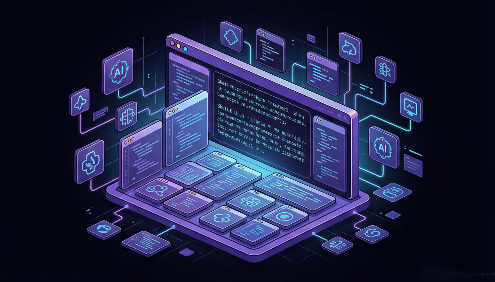

引言：终端的四十年沉睡
自 1978 年 DEC VT100 终端问世以来，命令行界面（CLI）的本质几乎没有发生过根本性的变化。我们今天使用的 Terminal.app、iTerm2、GNOME Terminal，在交互范式上与四十年前的前辈惊人地相似——一个黑底白字的字符流管道，输入、输出、滚动，周而复始。
但这四十年间，软件开发的世界已经天翻地覆。IDE 从 Vi/Emacs 进化到 VS Code 和 JetBrains，编程语言从 C 发展到 Rust 和 Zig，软件工程从单人作坊发展到万人协作。而终端——这个每个开发者每天都要打开的工具——却像一个被时间遗忘的角落，依然在用纯文本流的方式与开发者对话。
"Terminal emulators are the last bastion of 1970s computing. It's time we brought them into the 21st century." —— Zach Lloyd, Warp 联合创始人 & CEO
这正是 Warp 诞生的起点。Warp 不是一个"更好的终端模拟器"，也不是在传统终端上贴一个 AI 聊天窗口的产物。它的目标，是重新定义终端本身——将终端从一个被动的字符管道，转变为一个 Agentic Development Environment（ADE，代理式开发环境）。
六年进化：从 Rust 重写到 ADE
Warp 的故事始于 2020 年。由前 Google Sheets 负责人 Zach Lloyd 创立，这个团队从一开始就做了一个在当时看来相当激进的决定：用 Rust 从零构建终端，而不是基于已有的 VTE 或 ConPTY 库做修补。
这个决定的背后是一个深刻的洞察：传统终端模拟器基于 CPU 渲染文本，这在当今 GPU 时代是一种巨大的浪费。如果要用 GPU 加速渲染终端界面，就需要从底层重新设计渲染管线——而这恰恰是 Rust 擅长的领域。
Rust 重写终端内核，引入 GPU 渲染引擎（WarpUI），实现 Block-Based 输出系统。核心目标是让终端拥有现代编辑器的交互体验。
集成 AI Agent 能力，支持自然语言到命令的转换、智能命令建议、Warp AI 对话。开始构建 "AI-native terminal" 愿景。
推出 Warp Drive 云端协作平台，支持 Agent 在本地和云端运行，集成 MCP 协议。定位从 "AI Terminal" 升级为 "Agentic Development Environment"。
以 AGPL v3 协议在 GitHub 上正式开源完整客户端代码。开源不到 24 小时即突破 3.5 万 Star，目前累计超过 48,000 Star。
三引擎架构：Rust + GPU + AI
要理解 Warp 的技术野心，首先需要看清它的架构全景。Warp 不是在现有终端模拟器上"加功能"，而是从内核到界面到 AI 层，全部自己实现。整个项目由 60 多个 Rust Crate 组成，形成了一个完整的"终端操作系统"。
3.1 Rust 内核：安全与性能的基石
Warp 选择 Rust 作为核心开发语言，并非赶时髦。终端模拟器是一个对性能和安全性要求极高的领域：它需要处理大量的 I/O 操作、解析复杂的终端转义序列（ANSI/VT sequences）、管理多个 PTY（伪终端）会话。传统上使用 C/C++ 编写的终端模拟器（如 xterm、VTE）经常面临内存安全问题。
Rust 的所有权系统和借用检查器从编译期就杜绝了数据竞争和悬垂指针，这对于一个需要同时管理渲染、输入、网络、AI 多个并发任务的系统来说至关重要。Warp 的 Crate 组织结构清晰：
3.2 GPU 渲染引擎：WarpUI 与 Skia
传统终端模拟器使用 CPU 进行文本渲染，这限制了它们的刷新率和动画流畅度。Warp 构建了一个名为 WarpUI 的自研渲染框架，底层基于 wgpu（Rust 实现的 WebGPU 标准）和 Skia 2D 图形库。
这意味着终端的每一帧输出都经过 GPU 管线处理。实际效果是 Warp 可以稳定在 120fps 下运行，滚动、选择、拖拽操作的流畅度堪比原生 macOS/Windows 应用。当你大量输出日志（比如 cargo build 或 npm install）时，传统终端可能会卡顿甚至丢失帧，而 Warp 则能丝滑地处理。
pub struct WarpRenderer {
gpu_device: wgpu::Device,
gpu_queue: wgpu::Queue,
skia_context: SkiaContext,
font_atlas: FontAtlasCache,
surface: Surface,
}
impl WarpRenderer {
/// 每帧渲染调用，通过 GPU 加速完成文本和 UI 绘制
pub fn render_frame(&mut self, frame: &Frame, blocks: &[TerminalBlock]) {
let encoder = self.gpu_device.create_command_encoder(
&CommandEncoderDescriptor { label: Some("frame_encoder") }
);
// 1. 清除上一帧内容
self.skia_context.clear(Color::from_hex("#0a0a0f"));
// 2. 遍历 Block 列表，依次进行布局和绘制
for block in blocks {
self.layout_block(block);
self.draw_block_text(block, &mut encoder);
self.draw_block_decorations(block, &mut encoder);
}
// 3. 提交 GPU 命令并呈现到屏幕
self.gpu_queue.submit([encoder.finish()]);
frame.present();
}
}3.3 AI Agent 层：不只是 Copilot
Warp 的 AI 层不是简单的"终端 Copilot"。它构建了一个完整的 Agent Runtime，支持多种大模型后端（包括 GPT-4o、Claude、Gemini 等），能够理解用户的自然语言意图，将其转化为具体的终端操作序列，并观察执行结果做出决策。
这个架构设计的精妙之处在于，AI Agent 与终端内核是深度耦合的——Agent 不仅能"读"终端输出，还能理解 Block 的结构化语义，知道哪段是命令、哪段是输出、哪段是错误信息。这比一个通用的 AI 助手在终端里"看截图"要精准得多。
Block-Based 输出系统
如果你问 Warp 用户"最喜欢的功能是什么"，Block-Based Output 系统大概率会排在前三。这个功能从根本上改变了终端输出的呈现方式。
在传统终端中，所有命令的输出混在一起形成一条连续的字符流。当你执行了多条命令后，要在密密麻麻的文本中找到某条命令的输出，往往需要反复滚动和搜索。Warp 的 Block 系统将每次命令执行及其输出封装为一个独立的"块"（Block），每个块都有明确的边界、命令标题、执行时间和退出状态。
结构化输出
每条命令的输入和输出被封装为独立 Block，带有时间戳、退出码和命令标题，告别"找输出找到眼花"。
块级编辑与复制
像编辑文档一样选择、复制、粘贴终端中的任何文本。支持块级选中，不再需要精确到字符地拖选。
智能搜索
在所有历史 Block 中进行全文搜索，快速定位到之前的命令输出，支持正则表达式匹配。
一键分享
将任意 Block 生成为可分享的链接，团队成员可以直接查看命令输出，无需截图。
╭─ Block #1 ──────────────────────────────────────── ✓ 0.3s
│ $ cargo build --release
│ Compiling warp-terminal v0.2026.04.28
│ Compiling warp-ui v0.15.2
│ Compiling agent-runtime v1.8.0
│ Finished release [optimized] target(s) in 42.7s
╰──────────────────────────────────────────────────────────
╭─ Block #2 ──────────────────────────────────────── ✗ 1.2s
│ $ cargo test --package agent-runtime
│ running 147 tests
│ test agent::tests::test_command_generation ... ok
│ test agent::tests::test_mcp_handshake ... ok
│ test agent::tests::test_multi_step_plan ... FAILED
│ fail: assertion failed at agent/tests/multi_step.rs:42
╰──────────────────────────────────────────────────────────开发者贴士：Block 系统与 AI Agent 的协作非常优雅——当你让 AI "帮我分析上一次构建失败的原因" 时，Agent 能直接引用特定 Block 的结构化数据，而不是在一大段终端文本中"猜"哪些内容是相关的。
AI Agent 原生集成
Warp 的 AI Agent 是其最具差异化的能力。与 VS Code Copilot 或 ChatGPT 等工具不同，Warp 的 Agent 不是"旁观者"，而是"参与者"——它深度嵌入终端的执行循环中，能够主动执行命令、观察输出、做出决策、继续下一步操作。

5.1 多模型后端支持
Warp 的 Agent Runtime 采用了模型无关的架构设计，通过统一的 LLM Gateway 对接不同的大模型提供商。目前支持的模型包括 OpenAI GPT-4o、Anthropic Claude、Google Gemini 等，并且通过 MCP 协议可以扩展到更多模型和工具。用户可以根据任务类型和偏好选择不同的模型后端。
5.2 25+ AI Actions
Warp 内置了超过 25 种预定义的 AI Actions，覆盖了开发者最常见的操作场景。这些不是简单的 prompt 模板，而是经过精心设计的 Agent 工作流，每个 Action 都包含完整的多步执行逻辑和错误处理策略。
自然语言命令
用自然语言描述你想做的事情，Agent 会生成并执行对应的终端命令。支持多步命令的链式执行。
错误诊断
当命令执行失败时，Agent 自动分析错误输出，给出诊断信息和修复建议，必要时自动执行修复。
代码审查
直接在终端中进行 Git Diff 审查、PR 评论，Agent 辅助检查代码变更并生成审查意见。
外部 Agent 编排
支持在 Warp 中运行 Claude Code、Codex、Gemini CLI 等外部 Agent，统一管理和编排。
5.3 Agent 执行模型
Warp 的 Agent 采用"人在环路"（Human-in-the-loop）的执行模型。Agent 在执行每一步操作前会向用户展示即将执行的操作，用户可以审批、修改或拒绝。这既保证了自动化效率，又确保了安全性——毕竟在终端中执行命令是一件需要谨慎对待的事情。
You: "帮我找到项目中所有未使用的依赖包并清理它们"
Agent Plan:
┌─────────────────────────────────────────────┐
│ Step 1: cargo install cargo-udeps auto │
│ Step 2: cargo +nightly udeps --all-targets confirm │
│ Step 3: Analyze output, list unused deps auto │
│ Step 4: Remove from Cargo.toml confirm │
│ Step 5: cargo build --release (verify) confirm │
└─────────────────────────────────────────────┘
[Approve Plan] [Modify] [Cancel]MCP 协议与工具生态
MCP（Model Context Protocol）是由 Anthropic 提出的一种标准化协议，旨在让 AI 模型能够以统一的方式与外部工具和数据源交互。Warp 是 MCP 协议的早期采用者之一，并将其深度整合到了 Agent Runtime 中。
通过 MCP，Warp 的 Agent 可以与外部服务进行交互——无论是查询 Jira 上的 Issue、读取 Notion 中的文档、操作 Kubernetes 集群，还是调用自定义的 API——都通过同一套标准化的 Tool Interface 完成。这极大地扩展了 Agent 的能力边界。
MCP 的意义：在没有 MCP 之前，每个 AI 工具都需要为每个外部集成写专门的 adapter。MCP 把这件事标准化了——任何实现了 MCP Server 的工具，都可以直接被 Warp Agent 调用，无需额外适配。
插件系统：QuickJS Runtime
除了 MCP，Warp 还内置了一个 QuickJS 运行时，支持使用 JavaScript/TypeScript 编写终端插件。这些插件可以扩展终端的功能——从自定义主题、快捷键映射，到复杂的自动化工作流。插件系统采用沙箱隔离，确保安全性。
import { WarpPlugin, TerminalContext } from '@warp/sdk';
export default class GitStatusPlugin implements WarpPlugin {
name = 'git-status-enhanced';
async onBlockComplete(ctx: TerminalContext) {
// 检测 git 命令执行完成
if (ctx.block.command.startsWith('git')) {
const status = await ctx.exec('git status --porcelain');
const modified = status.split('\n').filter(l => l.startsWith(' M'));
if (modified.length > 0) {
ctx.ui.showBadge(`${modified.length} files modified`, 'warning');
}
}
}
}开源生态与社区
2026 年 4 月 28 日，Warp 以 AGPL v3 协议在 GitHub 上正式开源了其完整客户端代码。这个消息在开发者社区引发了巨大的反响——开源不到 24 小时，GitHub Star 数就突破了 35,000，成为当天 GitHub Trending 上的现象级项目。
这次开源并非"象征性开源"——Warp 开放了超过 60 个 Rust Crate 的完整源码，包括核心的渲染引擎 WarpUI、PTY 管理器、Agent Runtime 等关键模块。同时，UI 框架部分采用 MIT 许可证，方便社区在自己的项目中使用。
开源后 Star 数的爆发式增长证明了一件事：开发者对终端工具现代化的渴望是真实且强烈的。Warp 不只是做了一个"更好看的终端"，而是展示了一种全新的开发范式。 —— 某知名技术博主
开源后的社区贡献
开源仅一个多月，Warp 的 GitHub 仓库就已经收到了数百个 Pull Request，涵盖 Bug 修复、功能增强、文档完善等多个方面。社区贡献者还开发了大量第三方主题、插件和 MCP Server，极大地丰富了 Warp 的生态。
60+ Crates 开源
从渲染引擎到 Agent Runtime，核心模块全部开放，允许社区深度参与开发和改进。
MIT UI 框架
WarpUI 的 GPU 渲染框架以 MIT 协议开源，其他项目可以自由使用这套高性能渲染方案。
社区插件生态
数百个社区开发的主题、插件和 MCP Server，覆盖从 DevOps 到数据分析的各种场景。
全球化社区
来自全球各地的贡献者，包括来自 Google、Meta、Rust 社区的核心开发者。
与传统终端的对比
要理解 Warp 的革新之处，最直观的方式就是与现有终端工具进行对比。下表从渲染方式、AI 能力、输出管理、协作功能和扩展性五个维度进行了全面比较：
| 特性 | Warp | iTerm2 | Windows Terminal | Alacritty |
|---|---|---|---|---|
| 开发语言 | Rust | Objective-C | C++/C# | Rust |
| 渲染方式 | GPU (wgpu + Skia) | CPU | GPU (DirectWrite) | GPU (OpenGL) |
| 刷新率 | 120 fps | 60 fps | 60 fps | 120+ fps |
| AI Agent 集成 | 原生深度集成 | 无 | 无 | 无 |
| Block-Based 输出 | ✓ | ✗ | ✗ | ✗ |
| MCP 协议支持 | ✓ | ✗ | ✗ | ✗ |
| 团队协作 | Warp Drive | Shell 共享 | ✗ | ✗ |
| 插件系统 | QuickJS + MCP | Python 脚本 | JSON 配置 | TOML 配置 |
| 跨平台 | macOS / Linux / Windows | macOS only | Windows only | 全平台 |
| 开源协议 | AGPL v3 / MIT | GPL v2 | MIT | Apache 2.0 |
客观视角：Warp 并非没有争议。部分开发者对 AGPL 协议的商业限制表示担忧；也有人认为 Warp 的云端功能（Warp Drive）引入了不必要的复杂性。Alacritty 在纯渲染性能上仍然是最快的选择。选择终端工具应该根据个人需求和偏好来决定。
展望：下一代开发范式
Warp 的出现和爆火，不仅仅是"一个终端工具火了"那么简单。它背后折射出的是软件开发范式正在经历的深刻变革。
从"工具"到"环境"
传统开发工具是离散的、被动的——你打开一个 IDE 写代码，打开一个终端执行命令，打开一个浏览器查文档，打开一个 Slack 窗口讨论问题。Warp 的愿景是将这些能力统一到一个 Agentic Development Environment 中：AI Agent 理解你的整个工作上下文，自动协调不同工具之间的交互。
Agent 协作的未来
当 Agent 能力越来越强，一个自然的问题出现了：多个 Agent 能否协作？Warp 的架构已经在为这个未来做准备——Warp Drive 平台支持 Agent 在云端运行，理论上可以实现多个 Agent 分工协作，完成从需求分析到代码实现到测试验证的完整工作流。
开发者体验的重新定义
Warp 的成功也证明了一个重要趋势：开发者越来越重视"Developer Experience"（开发者体验）。一个工具不仅要功能强大，还要用起来舒服、看起来好看、交互要直觉化。在这个维度上，Warp 用 Rust 的安全、GPU 的流畅、AI 的智能，为终端工具设立了一个新的标杆。
"The future of development is not about replacing developers with AI. It's about giving every developer a team of AI agents that understand their codebase, their workflow, and their intent." —— Warp 团队
如何开始使用
如果你被 Warp 的理念所吸引，开始使用非常简单。Warp 目前支持 macOS、Linux 和 Windows 三大平台，可以从官网直接下载安装，也可以通过 Homebrew（macOS/Linux）安装。对于想要深入参与开发的贡献者，GitHub 上的仓库文档提供了完整的架构说明和贡献指南。
# macOS (Homebrew)
brew install --cask warp
# Linux (deb)
curl -sSfL https://app.warp.dev/download/deb | sudo dpkg -i -
# 从源码构建
git clone https://github.com/warpdotdev/warp.git
cd warp && cargo build --release结语
Warp 的故事远没有结束。从一个用 Rust 重写的终端模拟器，到今天拥有 GPU 渲染、AI Agent、MCP 协议、云端协作的 Agentic Development Environment，Warp 用六年时间证明了一件事：即使是最"古老"的开发工具，也值得被认真对待。
在 AI 浪潮席卷软件行业的今天，Warp 给出了一个令人信服的答案：AI 不应该只是 IDE 里的一个侧边栏，它应该成为开发环境的核心组成部分。而终端，这个连接开发者与机器的最底层接口，恰恰是 AI Agent 最自然的"栖息地"。
如果你还没有尝试过 Warp，也许是时候给你的终端一个升级了。毕竟，你值得一个活在 21 世纪的开发工具。